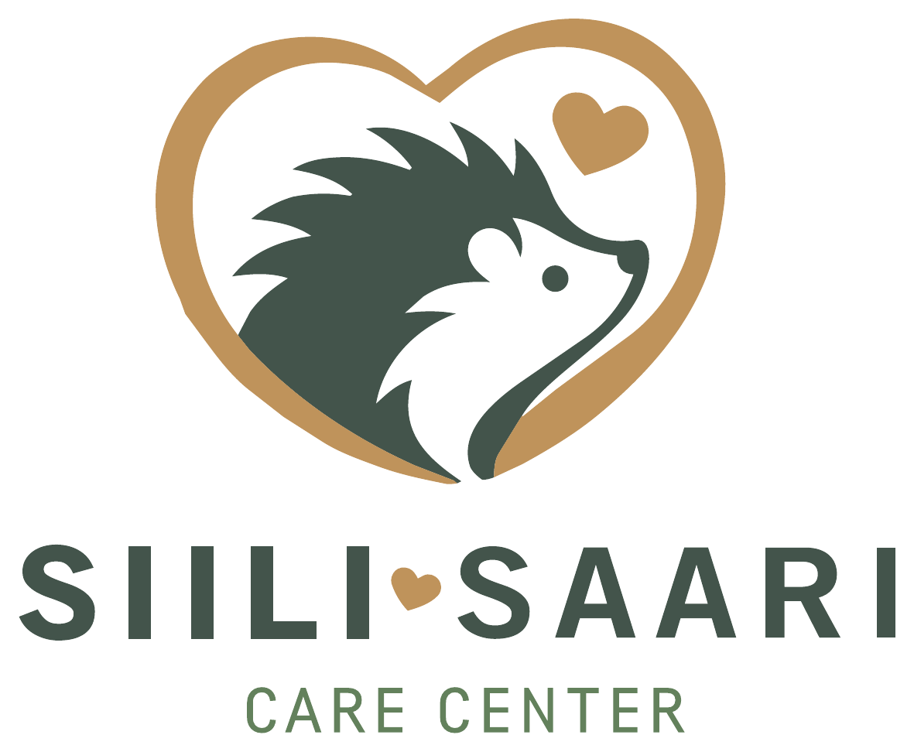
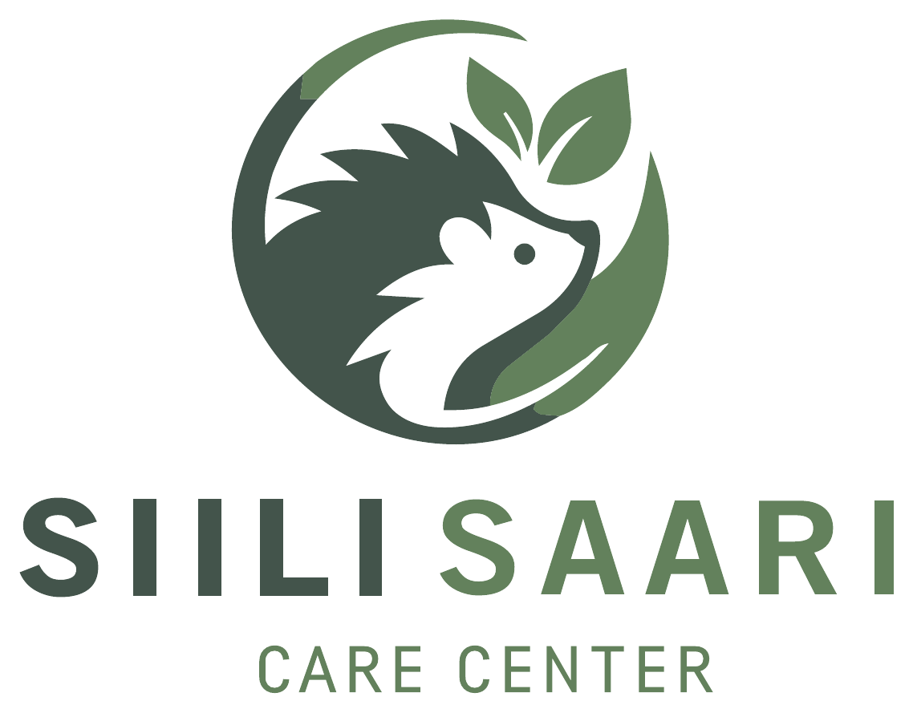
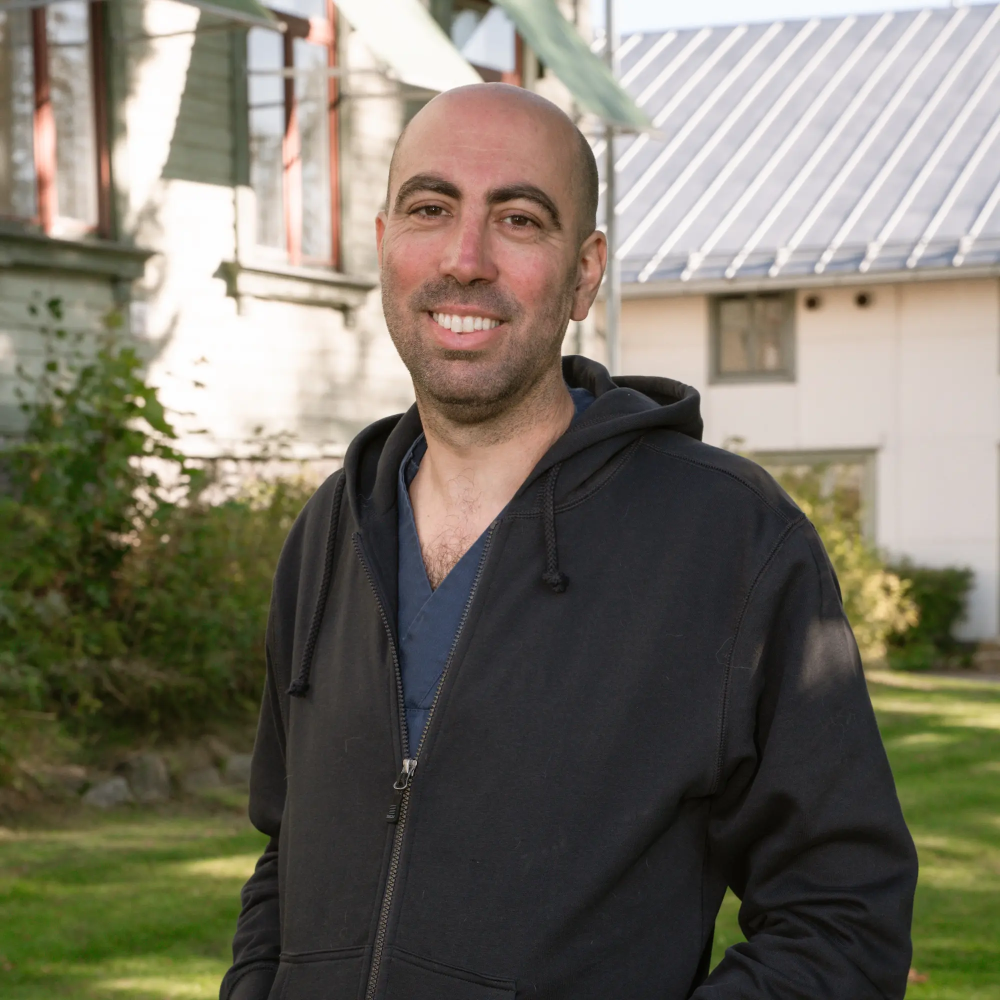

Annamme siileille uuden mahdollisuuden, yksi pieni potilas kerrallaan
Meistä
Siili-Saari Care Center on siilien kuntoutuskeskus, jota ylläpitää Eläinklinikka Saari Vaasassa. Pelastamme, hoidamme ja kuntoutamme loukkaantuneita ja orpoja siilejä (Erinaceus europaeus) ennen niiden vapauttamista luontoon.
Euroopan siilikantaa uhkaavat elinympäristöjen häviäminen, liikenne, torjunta-aineet ja ilmastonmuutos. Tehtävämme on tarjota ammattitaitoista eläinlääketieteellistä hoitoa näille rakastetuille eläimille ja opastaa yhteisöä elämään niiden kanssa sopusoinnussa.

Toiminta
Kiireellinen vastaanotto ja tilan vakauttaminen löydetyille loukkaantuneille, sairaille tai orvoille siileille. Välitön triage, lämpö ja nesteytys.
Täysi eläinlääketieteellinen diagnostiikka ja hoito — röntgenkuvauksista ja leikkauksista loisten hoitoon, haavanhoitoon ja lääkitysprotokolliin.
Asteittainen toipuminen luonnonmukaisissa ulkoaidatuksissa. Painon seuranta, ravinnonhakutaitojen arviointi ja turvallinen vapauttaminen sopiviin elinympäristöihin.
Yhteisötiedotus, koulukäynnit ja yleisötietoisuuskampanjat siilien suojelusta sekä siiliystävällisten puutarhojen luomisesta.
Tiimimme

Eläinlääkäri ja perustaja
Laillistettu eläinlääkäri ja Eläinklinikka Saaren omistaja. Vastaa lääketieteellisestä hoidosta, leikkauksista ja kaikkien kuntoutusprotokollien valvonnasta.
Perustajajäsen ja toiminta
Vaasalainen yrittäjä, joka tuo organisatorista osaamista luonnonvaraisten eläinten hoitoon. Hoitaa keskuksen toimintaa, vapaaehtoistyön koordinointia ja yhteisötiedotusta.
Miten auttaa
Jokainen minuutti on tärkeä. Näin toimit odottaessasi ammattiapua.
Käytä puutarhahanskoja tai paksua pyyhettä. Siili voi kääriytyä palloksi — se on normaalia, käsittele varoen.
Käytä pahvilaatikkoa, jossa on ilmareikiä. Laita pohjalle pyyhe tai sanomalehti mukavuuden vuoksi.
Aseta pyyhkeeseen kääritty lämpöpullo siilin viereen (ei päälle). Säilytä hiljaisessa, pimeässä huoneessa.
Ota yhteyttä Siili-Saari Care Centeriin. Opastamme sinut eteenpäin ja järjestämme tarvittaessa noudon.
Hätälinja: +358 6 321 7300
Klinikan aukioloaikoina — iltaisin ja viikonloppuisin jätä viesti vastaajaan, soitamme takaisin
Yhteystiedot
Gerbyntie 20
65230 Vaasa, Suomi